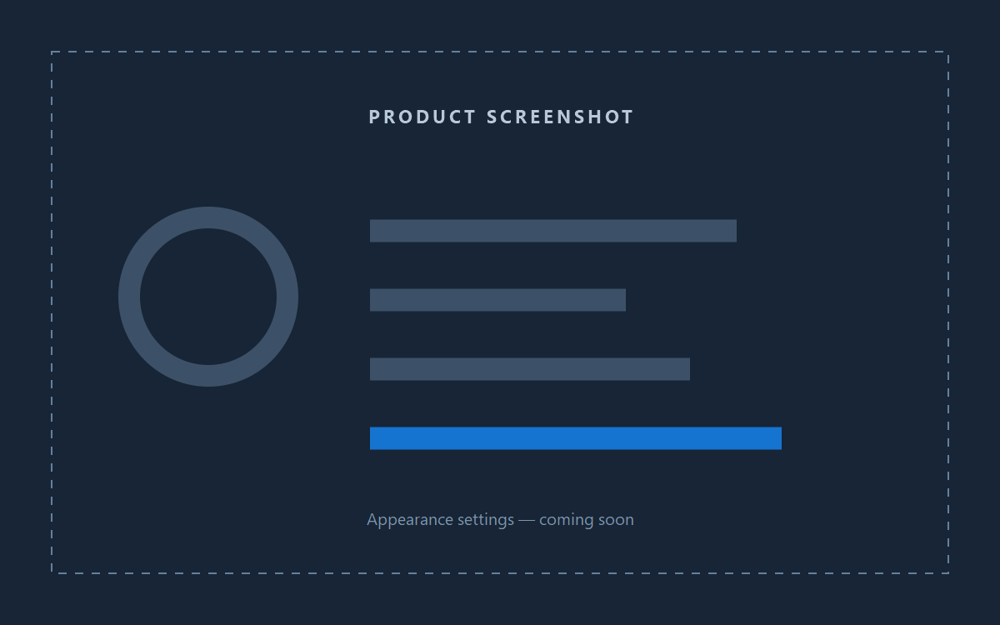
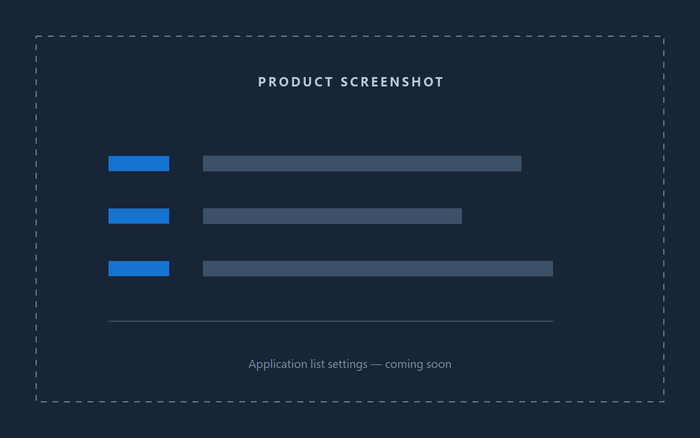

02A
Appearance settings
Choose the theme, size, icon scale, and visual rhythm that feel right on your desktop.
LOCAL-FIRST WINDOWS UTILITY
PinLaunch gives your everyday apps, folders, web apps, and commands one calm, configurable place to start.
Available after Microsoft Store certification.
Built for the desktop. Windows 10 version 1809+ and Windows 11, x64.
Your menu stays on your device. Your workflow stays yours.
THE TASKBAR MENU
01SETTINGS THAT FIT
Two focused settings areas make PinLaunch feel like your tool—not a fixed launcher you have to work around.

02A
Choose the theme, size, icon scale, and visual rhythm that feel right on your desktop.
02B
Build groups, reorder entries, and add the Windows apps and supported PWAs you actually use.

HOW IT WORKS
03Place PinLaunch on the taskbar for one-click access.
Add and arrange the shortcuts that belong in your day.
Open the menu and move on without hunting through windows.
PRIVACY
PinLaunch does not collect, transmit, sell, or share personal information. Menu configuration and shortcut or app discovery are processed locally on your device only.
PinLaunch does not include telemetry, analytics, advertising, account sign-in, cloud sync, or automatic update checking.
If a future version adds a network or data-collection feature, this statement will be updated before that version is released.